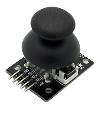
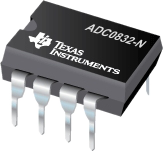
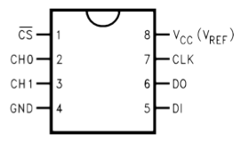
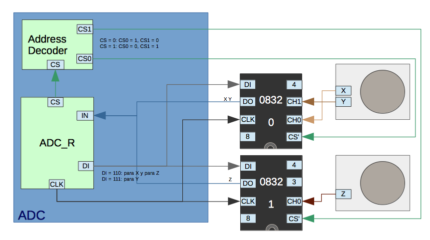
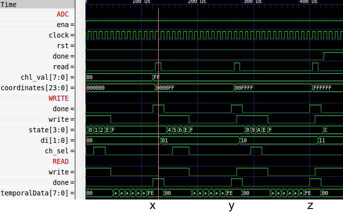

Control Remoto RF
Un control remoto para un dron, convirte el comando mecánico de direcciones a una señal interpretada por el mecanismo del dron.
Para construir, el control, es necesário convertir un movimento en una señal, para eso, se puede utilizar unos joystick, hecho a partir de dos potenciómetros y un botón.
Utiliando una entrada de 5V, saldrá un porcentaje de esa tensión, a las salidas Vx y Vy, dependiendo del movimiento hecho en el joystick. Es señal analógica es reconocida por el "ADC0832" y transformada a digital.
Luego esta señal digital es enviada hasta el objeto que se desea controlar, a través de una conexión inalámbrica
Conversión Análogico a Digital
Para convertir una señal analogica a digital, se puede utilizar uno de los chips de la línea ADC083x.
- CS': Chip select invertido, el chip trabaja sí CS' está en bajo (bajo = 0V y alto = 5V)
- CH0: Canal analógico 0
- CH2: Canal analógico 1
- GND: Ground
- VCC: La entrada del chip, debe ser de 5V
- CLK: El reloj del chip, debe correr a 250kHz
- Do: Salida digital
- Di: Entrada digital digital
Para leer la información de alguno de los canales canal, y transformá-la en digital, se poner el CS' en 0 y luego debe mandar a la entrada Di, el 1 por dos ciclos y al tercer ciclo mandar un 0 para leer el canal 0 o el 1 para leer el canal 1 en los flancos de subida, luego mantener la entrada en 0 hasta que complete la lectura.
La lectura de la señal,saldrá en los proximos 8 flancos de bajada.
Para el sistema de controles remotos, se utilizarán dos ADC0832 debido que que un control remoto, utiliza 3 direcciones, (x,y,z). Para esto, se contruye, que pueda leer cualquer de los dos chips.
Luego unificar las 3 señales pidiendo leer x, luego y, por último el z.
Se activa el write, luego pide leer x, luego lee el valor de x, despues, activa el write y se repite para y e z.
Luego esa señal digital es transformada y enviada por la antena de RF NRF24l01.